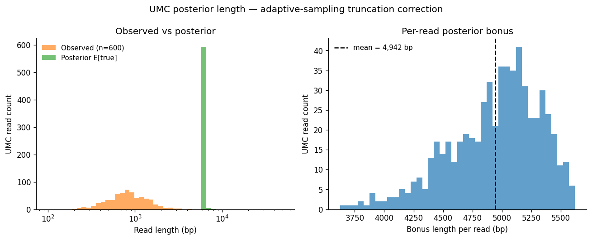
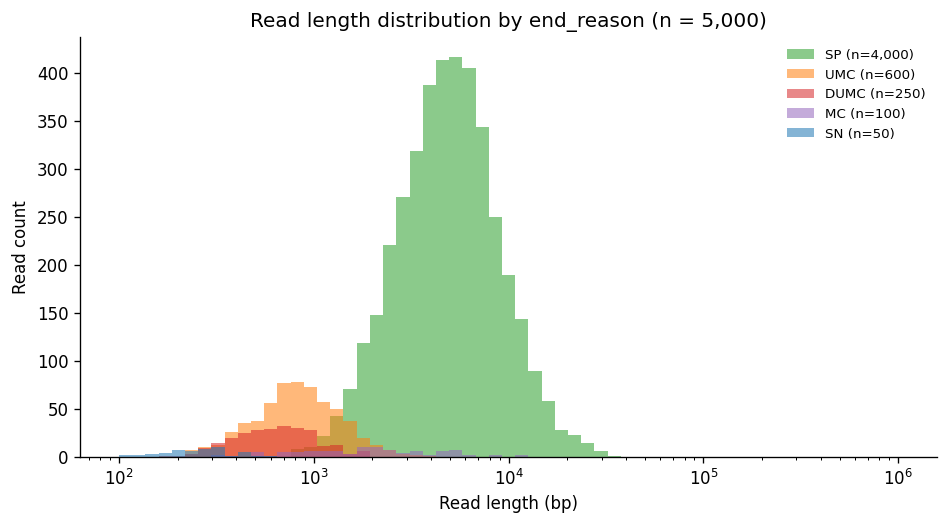
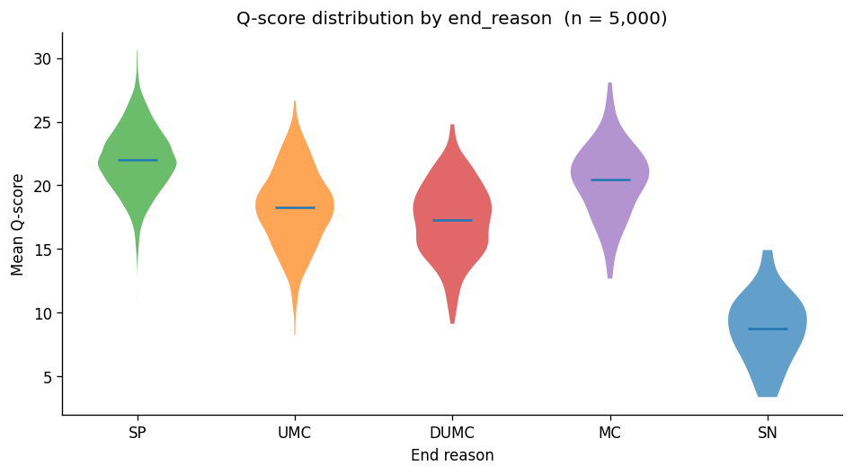
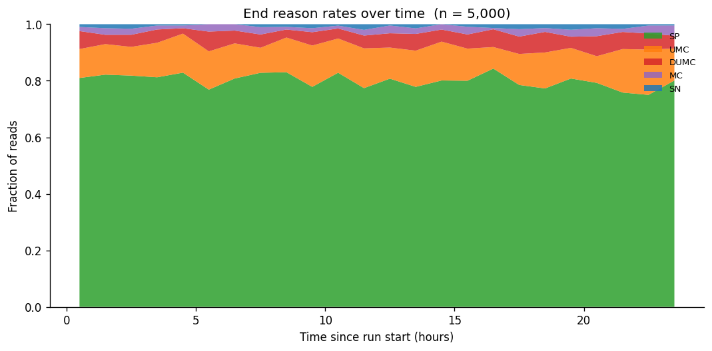
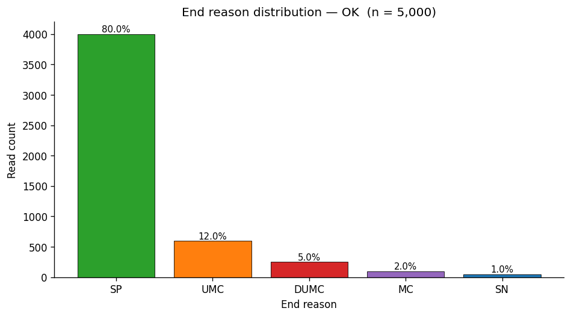
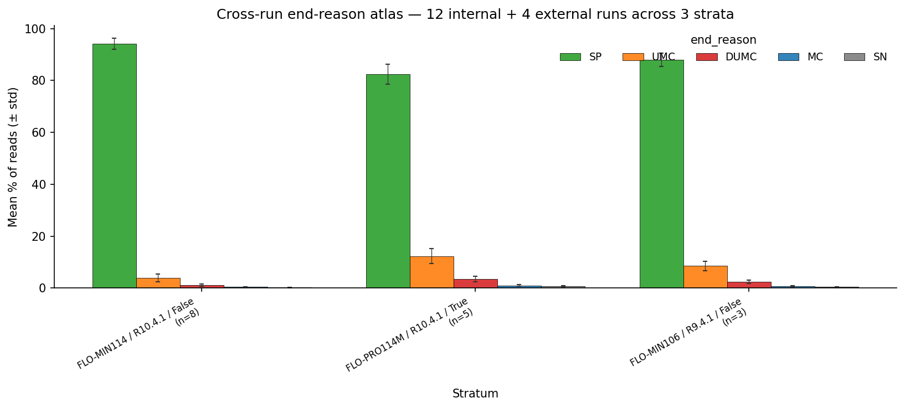

Why this tool?
Oxford Nanopore sequencers tag every read with an end_reason
explaining why sequencing stopped. A read can have high base quality (Q>20)
and still be truncated or rejected by adaptive sampling — filtering by Q-score
alone is not enough for accurate downstream analysis.
ont-end-reason unifies the eight published analyses from the end-reason
paper into a single PyPI-installable CLI, including the paper's novel
posterior length model for adaptive-sampling-truncated reads.
Install
# static figures only
pip install ont-end-reason
# + Plotly for interactive HTML reports
pip install "ont-end-reason[interactive]"
# Development (clone the repo)
git clone https://github.com/Single-Molecule-Sequencing/ont-end-reason.git
cd ont-end-reason
pip install -e ".[dev,interactive]"Quickstart
Five commands cover the canonical pipeline.
# 1. Inventory a sequencing-run directory
ont-end-reason discover /path/to/run --manifest run.json
# 2. Tag a BAM with end_reason from sequencing_summary.txt
ont-end-reason tag --summary sequencing_summary.txt --bam in.bam --out tagged.bam
# 3. Filter to complete reads only (signal_positive)
ont-end-reason filter --bam tagged.bam --keep SP --out complete.bam
# 4. Run the paper's central novel analysis
ont-end-reason analyze umc-posterior sequencing_summary.txt --plot umc.pdf
# 5. Build a self-contained 6-section HTML report
ont-end-reason report interactive sequencing_summary.txt --out report.htmlSubcommand reference
Nine analysis subcommands, four filter operations, three figure reproducers.
Filter operations
discover
Walk a directory and emit a JSON manifest of POD5 / Fast5 / sequencing_summary / BAM / FASTQ files.
tag
Tag a BAM with end_reason metadata from sequencing_summary.txt. Streaming; PromethION-safe.
filter
Keep / drop reads by end_reason short code (SP, UMC, MC, …) with parallel I/O.
export-fastq
Convert a filtered BAM to FASTQ for NanoPack tools (NanoPlot, NanoFilt, Filtlong).
stats
Streaming summary stats from sequencing_summary.txt. Bounded RAM regardless of file size.
Analysis (analyze <subcommand>)
analyze distribution
Per-end_reason counts + OK/CHECK/FAIL quality gate based on signal_positive %.
analyze length
Per-end_reason length distributions: mean, median, percentiles, N50, log-x histogram.
analyze quality
Q-score distributions per end_reason with Gaussian Mixture Model fit (BIC-selected k).
analyze temporal
End_reason rates over sequencing-run time. Flowcell-degradation diagnostic.
analyze hypothesis
Mann-Whitney U / KS tests between two end_reason populations with Cliff's Δ.
analyze umc-posterior ⭐
The paper's novel analysis — Bayesian posterior over true UMC length given adaptive-sampling truncation.
analyze signal-trace
Extract and visualise the raw current trace for a single POD5 read.
analyze sma-metrics
Optional bridge to the smaseq-qc package's per-read metrics.
analyze tables
Generate summary / per-class / quality tables as TSV / CSV / markdown / LaTeX.
Paper figure reproducers
figure fig3
End-reason distribution bar chart (paper Figure 3).
figure fig5
Q-score violins per end_reason (paper Figure 5).
figure fig6
UMC posterior diagram (paper Figure 6).
figure supplementary
Auto-render the paper's supplementary figures (in development).
Composed reports
report interactive
6-section self-contained HTML report with embedded Plotly charts.
report static
Paginated PDF report (v0.3.0 roadmap).
Live examples
All charts and numbers below were generated by running the tool against the
synthetic
5000-read fixture shipped with the repo. To reproduce on your own data,
swap the fixture path for your sequencing_summary.txt.
End reason distribution
Status OK on the fixture — 80% signal_positive / 12% UMC.
$ ont-end-reason analyze distribution sequencing_summary.txtUMC posterior length — the paper's central novel analysis
Given that UMC reads are truncated at the adaptive-sampling decision point, the
observed length is a lower bound on the molecule's true length. Fitting a
lognormal prior to signal_positive reads and applying truncated-posterior
Bayesian inference per UMC read gives:
- Observed mean length: 926 bp
- Posterior expected true mean: 5,868 bp
- Per-read bonus (lost sequence): 4,942 bp / read
- Total bonus across 600 UMC reads: ~3 Mb
The truncated-lognormal posterior runs in O(n) over the UMC reads using scipy. For real PromethION runs with millions of UMC reads, the recovered sequence scales linearly.
$ ont-end-reason analyze umc-posterior sequencing_summary.txt --plot umc.pdf
UMC reads: 600
Prior class: signal_positive (log μ=8.488, log σ=0.600)
Observed mean length: 926.2 bp
Posterior expected mean: 5868.1 bp
Posterior bonus mean: 4941.9 bp/read
Posterior bonus total: 2,965,111 bp
Per-end_reason length distributions
$ ont-end-reason analyze length sequencing_summary.txt
Q-score distributions with GMM fit
$ ont-end-reason analyze quality sequencing_summary.txt --plot violins.pdf
Temporal patterns
$ ont-end-reason analyze temporal sequencing_summary.txt --bin-seconds 3600
How the UMC posterior works
The novel analytic contribution. Given:
- Observed UMC length
o— a lower bound on true length - Lognormal prior fit to
signal_positivereads:L ~ Lognormal(μ, σ²)
The posterior on true length given truncation is the prior left-truncated at the observation:
P(L | L >= o) ∝ Lognormal(L; μ, σ²) · 𝟙[L >= o]The truncated mean has a closed form via the Mills ratio of the normal CDF:
E[L | L >= o] = exp(μ + σ²/2) · Φ(σ - z) / (1 - F(o)) where z = (log(o) - μ) / σ
Implementation: scipy.stats.lognorm, vectorised over the UMC reads.
Aggregated over all UMC reads gives the paper's headline "unobserved sequence"
estimate — a number you can compute on any sequencing_summary.txt with one
command and compare directly to the paper's published value.
Tutorials
-
Reproducing the paper's claim atoms
Step-by-step: take a public ONT run, install the tool, run each
analysis, and compare numbers to the paper.
Coming in v0.3.0 — tracked in issue #4.
-
Filtering for variant calling
Why
--keep SPmatters before calling SNVs from ONT data, and how filtering by Q-score alone is insufficient. -
Diagnosing flowcell degradation
Using
analyze temporalto spot rising UMC rates late in a run.Coming in v0.3.0
-
Library prep optimisation
Comparing two runs' end_reason profiles to evaluate prep changes.
Coming in v0.3.0
Figure gallery
Static publication-ready PDFs (also available via --plot on every CLI command).

ont-end-reason figure fig3 ...ont-end-reason analyze length ... --plotont-end-reason figure fig5 ...ont-end-reason analyze temporal ... --plotont-end-reason figure fig6 ...🗺️ Cross-run atlas
The analyze atlas subcommand answers a question a single-run
analysis can’t: “is THIS run normal relative to all the
lab’s prior runs and the public ONT community?”

📥 Data sources
-
Internal lab peers — auto-populated into
~/.ont-qc-baselines/by everyont-end-reason analyze distributioninvocation (--baseline-store, default on). One-time backfill viascripts/atlas_backfill.py. -
External peers — public ONT datasets (GIAB,
hereditary-cancer ONT Open Data) cached as Parquet fingerprints,
refreshed by the lab’s
/ont-public-dataskill.
📤 Output
Returns an AtlasResult JSON with per_stratum
statistics, outliers (composite anomaly score = max
|zi|), and a human-readable interpretation.
Empty store degrades gracefully — never crashes.
Designed-for: paper figure regenerators, dashboard panels, batch QC gates.
🚀 Usage
# Aggregate across both internal + external peers
ont-end-reason analyze atlas --json atlas.json --plot atlas.png
# Stratify on different metadata dimensions
ont-end-reason analyze atlas --strata flowcell_type,basecaller_model
# Tighten outlier flagging (default z >= 2.0)
ont-end-reason analyze atlas --z-threshold 3.0
# Reproduce paper fig8 directly
ont-end-reason figure atlas --out fig8.png🔗 Atlas artifacts
Lab infrastructure
ont-end-reason is part of the Single-Molecule-Sequencing org's analytic
toolchain and integrates with several lab-wide components:
- Companion paper: end-reason-paper — the paper's claim atoms (alignment_rate_filtered, snv_f1_filtered, etc.) pin to this tool for reproducibility.
-
Lab Claude Code skills:
/end-reasonand/end-reason-filterin ont-ecosystem. After v0.1.0 PyPI, these become thin wrappers thatpip install ont-end-reasonand delegate to the CLI — one source of truth, no drift. -
Onboarding: bundled in the canonical lab-repo manifest at
lab-onboarding,
cloned automatically by
bash wsl/bootstrap.shon any new lab device. - Archived predecessor: End_Reason_Manuscript (read-only). Every script in this repo carries a provenance header crediting commit b47166a of the archived source.
Citing
If you use ont-end-reason in published work, please cite the companion paper:
Athey BD et al. (in preparation). End reason filtering for accurate
analysis of Oxford Nanopore sequencing data. Single-Molecule-Sequencing
Lab, University of Michigan. https://github.com/Single-Molecule-Sequencing/end-reason-paperMachine-readable citation metadata is in CITATION.cff.